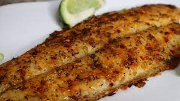

Oven fish

Description
Ingredients
- 1-1/4 pounds fish fillets
- 1 teaspoon seasoned salt
- Pepper to taste
- Paprika, optional
- 3 tablespoons butter, melted
Directions
- Preheat oven to 400°. Place fish in a greased 11x7-in. baking dish. Sprinkle with seasoned salt, pepper and, if desired, paprika. Drizzle with butter.
- Cover and bake until fish just begins to flake easily with a fork, 15-20 minutes.
Back to recipes